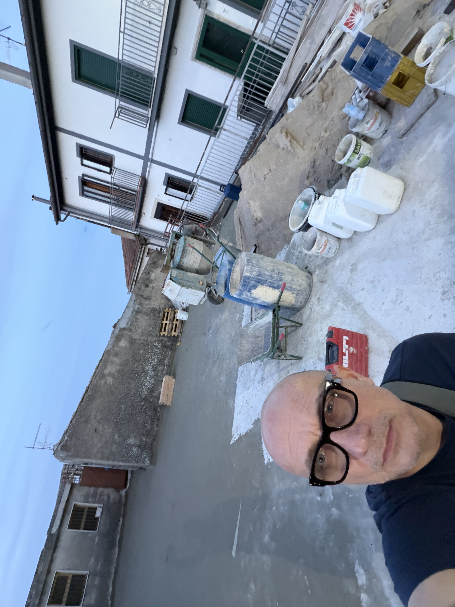

un sopralluogo / in notturna
ci sono decisioni che si prendono meglio di notte, quando il cantiere è vuoto e la piazza è tutta linee di gesso sul cemento grezzo. faeto, ore 21:00, con la squadra di edil tortorella.

faeto non dorme molto, ma di sera si ritira. le case si chiudono, la luce si fa radente, e la piazza — quella che stiamo ridisegnando da mesi — diventa improvvisamente leggibile come non lo è mai di giorno, quando le betoniere girano e la squadra si muove tra i ponteggi.
siamo venuti di sera proprio per questo. con i titolari di edil tortorella e la loro squadra, abbiamo camminato il cantiere centimetro per centimetro, riportando a terra i tracciati che fino ad allora stavamo tenendo in testa e sui fogli. era il momento giusto: la gettata di fondazione era pronta, le quote erano definite. bisognava decidere dove cominciare la posa della pavimentazione, e come distribuire i cavidotti dell'impianto elettrico prima che il piano si chiudesse sopra tutto.
di notte si vedono cose diverse
la luce artificiale cambia la percezione delle pendenze, dei piani, delle distanze. ci si accorge di cose che la piena luce del giorno appiattisce. abbiamo spostato di venti centimetri il margine est della zona pedonale — non è una correzione banale, su una piazza di quelle dimensioni — e abbiamo ridefinito l'orientamento di tre filari della pavimentazione. decisioni che di giorno, con il rumore del cantiere, sarebbero state più faticose da prendere.
l'impianto elettrico segue una logica che non è solo tecnica: ogni punto luce è pensato in relazione alla pavimentazione, ai percorsi, agli elementi di arredo. tracciare i cavidotti prima della posa significa avere ancora la libertà di sbagliare — e di correggere senza demolire.
gli ipogei sono il capitolo più delicato. due ambienti sotterranei che la piazza coprirà senza nascondere. / i cavidotti devono girarci intorno, non passarci sopra. — dal verbale di cantiere, giugno 2026
gli ipogei / il progetto nel progetto
sotto la piazza di faeto ci sono due ambienti ipogei da recuperare: vani scavati nel tufo, probabilmente di uso civico, che il progetto intende rendere accessibili e visibili. non una musealizzazione, ma un affaccio: una griglia a pavimento, una luce interna, un invito discreto a guardare giù mentre si attraversa la piazza.
il tracciato dei cavidotti è stato ridisegnato stanotte proprio in funzione di questo. dove il piano di posa si avvicina agli ipogei, i passaggi impiantistici devono farsi laterali, controllati, reversibili. è una delle condizioni di progetto che non ammette compromessi.
il prossimo sopralluogo sarà di mattina, quando inizia la posa. ma quello che contava, stasera, era mettere i chiodi — nel senso letterale e figurato. il cantiere adesso sa dove andare.